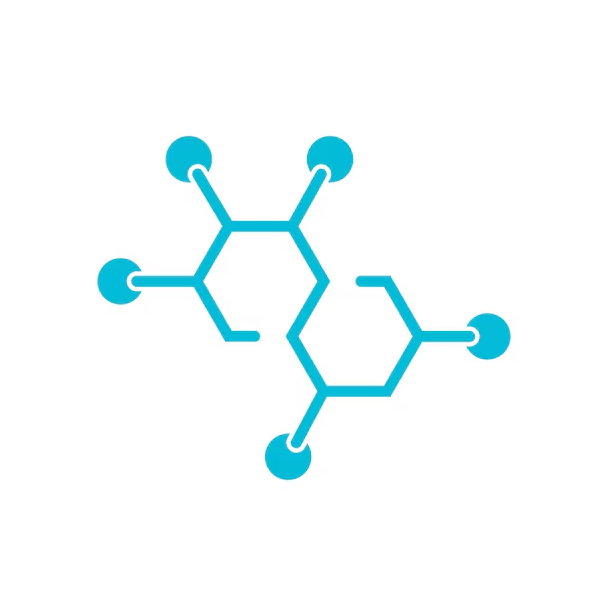

Matthieu Kaeppelin (M2DS)
Bastien Lecomte (M2DS)
Antoine Verier (M2DS)
Thomas Vujasinovic (M2DS)
Kam Osiris Yetna (M2DS)
molvision/BACE-V-SMILES-0 dataset. It contains SMILES representations (Simplified Molecular-Input Line-Entry System) of a large set of chemical compounds, which have been experimentally tested in vitro to assess their ability to inhibit the Beta-secretase 1 enzyme (BACE-1).Your mission is to design a robust binary classification model. Your algorithm will take the SMILES string of a molecule as input and predict its efficacy as a BACE-1 inhibitor by assigning it a label:
The enzyme BACE-1 plays a central role in the formation of amyloid plaques in the brain, one of the main pathological characteristics of Alzheimer's disease. It is therefore a major therapeutic target.
However, developing a new drug is an extremely cumbersome process. Physically testing millions of chemical compounds in the laboratory is an impossible approach on a large scale.
This is where machine learning becomes crucial. Being able to predict the activity of these inhibitors computationally (in silico) makes it possible to quickly filter candidate molecules, drastically reduce clinical failures, and accelerate the discovery of new treatments.
This is not a standard random-split challenge. The dataset has been strictly split based on Molecular Weight (MW):
Your model must prove it has learned true chemical rules to extrapolate to uncharted chemical space, rather than just memorizing the training statistics!
NB : You are not allowed to use the molecules of the hidden test set for training or validation. Any attempt to do so will lead to disqualification.
To manipulate the chemical data in the challenge, we strongly recommend using RDKit, the leading Python library for chemoinformatics. Its Chem module will allow you to easily convert SMILES text strings into more manageable molecular objects, then generate numerical descriptors (such as Morgan Fingerprints) that can be directly used by your machine learning models. RDKit is a powerful tool that will greatly facilitate your task of extracting the relevant characteristics of your molecules and climbing to the top of the rankings!
RDKit documentation: https://www.rdkit.org/docs/GettingStartedInPython.html
# install dependencies
%pip install -r requirements.txtimport os
import numpy as np
import pandas as pd
import matplotlib.pyplot as plt
from rdkit import Chem
from rdkit.Chem import Descriptors, Draw, rdFingerprintGenerator
from sklearn.base import BaseEstimator, ClassifierMixin
from sklearn.ensemble import RandomForestClassifier
from sklearn.metrics import cohen_kappa_score
pd.set_option('display.max_columns', None)# uncomment the following line to download the data
# %run tools/setup_data.pyinput_dir = 'dev_phase/input_data'
reference_dir = 'dev_phase/reference_data'Function to load the data :
def get_data():
"""Load X_train, y_train and X_test from csv files."""
train = pd.read_csv(os.path.join(input_dir, 'train/train_features.csv'))
X_train = train['SMILES']
train_labels = pd.read_csv(os.path.join(input_dir, 'train/train_labels.csv'))
y_train = train_labels['Label']
test = pd.read_csv(os.path.join(input_dir, 'test/test_features.csv'))
X_test = test['SMILES']
return X_train, y_train, X_test
X_train, y_train, X_test = get_data()First exploration of the data
print(f"Number of molecules in train set: {len(X_train)}")
X_train.head()plt.figure(figsize=(6, 4))
y_train.value_counts(normalize=True).plot(kind='bar', color=['#3498db', '#e74c3c'])
plt.title('Distribution of Labels in Training Set')
plt.xlabel('Label (0: Inactive, 1: Active)')
plt.ylabel('Proportion')
plt.xticks(rotation=0)
plt.show()
print(y_train.value_counts())mols = [Chem.MolFromSmiles(smiles) for smiles in X_train.head(8)]
labels = [f"Label: {l}" for l in y_train.head(8).values]
# Plot them in a grid
img = Draw.MolsToGridImage(mols, molsPerRow=4, subImgSize=(250, 250), legends=labels)
img# Calculate Molecular Weight for all training molecules
MW = X_train.apply(lambda x: Descriptors.MolWt(Chem.MolFromSmiles(x)))
plt.figure(figsize=(8, 5))
plt.hist(MW, bins=30, color='skyblue', edgecolor='black')
plt.title('Molecular weight distribution in training set')
plt.xlabel('Molecular weight (Daltons)')
plt.ylabel('Frequency')
plt.axvline(x=MW.max(), color='red', linestyle='--', label=f'Max train MW: {MW.max():.2f}')
plt.legend()
plt.show()The training set abruptly stops before 600 Daltons. Prepare your model to face much heavier molecules in the private test set !
Because of the class imbalance and the out-of-distribution nature of the test set (keep in mind that you are not allowed to use the molecules of the hidden test set for training or validation !), the evaluation of your model's performance cannot rely on a simple accuracy score.
That's why the metric used for this challenge is the Cohen's Kappa Score. It is defined as
$$ \kappa = \frac{p_o - p_e}{1 - p_e} $$
where \( p_o \) is the empirical probability of agreement on the label assigned to any sample (the observed agreement ratio), and \( p_e \) is the expected agreement when both annotators assign labels randomly. \( p_e \) is estimated using a per-annotator empirical prior over the class labels. We use the sklearn.metrics.cohen_kappa_score function to compute this metric.
Unlike the classical accuracy, the Kappa score evaluates the actual agreement between your predictions and the true labels, while mathematically subtracting the probability that such an agreement would occur by chance. This ensures that your ranking position reflects the true capability of your model to identify inhibitors.
Here, you should describe the submission format. This is the format the participants should follow to submit their predictions on the codabench platform.
class RFMorganBaseline(BaseEstimator, ClassifierMixin):
def __init__(self, n_estimators=100, radius=2, nBits=1024):
"""
Baseline model converting SMILES to Morgan Fingerprints
and training a Random Forest.
"""
self.n_estimators = n_estimators
self.radius = radius
self.nBits = nBits
self.model = RandomForestClassifier(
n_estimators=self.n_estimators,
random_state=42,
n_jobs=-1
)
# Initialize the Morgan fingerprint generator
self.mfpgen = rdFingerprintGenerator.GetMorganGenerator(radius=self.radius, fpSize=self.nBits)
def _smiles_to_fps(self, X):
fps = []
for smiles in X:
mol = Chem.MolFromSmiles(smiles)
if mol is not None:
# Calculate Morgan Fingerprint (equivalent to ECFP4 if radius=2)
fp = self.mfpgen.GetFingerprintAsNumPy(mol)
fps.append(fp)
else:
# Handle invalid smiles
fps.append(np.zeros(self.nBits))
return np.array(fps)
def fit(self, X, y):
"""
Training of the model
"""
print("Converting SMILES to Morgan Fingerprints...")
X_fp = self._smiles_to_fps(X)
print(f"Training Random Forest with {self.n_estimators} estimators...")
self.model.fit(X_fp, y)
self.classes_ = self.model.classes_
return self
def predict_proba(self, X):
"""
Probability prediction
"""
X_fp = self._smiles_to_fps(X)
return self.model.predict_proba(X_fp)
def predict(self, X):
"""
Class prediction
"""
X_fp = self._smiles_to_fps(X)
return self.model.predict(X_fp)
def get_model():
"""
Returns the baseline model.
"""
return RFMorganBaseline(n_estimators=100, radius=2, nBits=1024)Your submission file should be a .py file containging a scikit-learn compatible estimator class with fit, predict and predict_proba methods. You can find an example implementation in the solution/submission.py file.
Here you see how to test your model locally before submitting it on the platform. You can use the evaluate_submission function to compute the Kappa score of your predictions on the local test set. This will allow you to quickly iterate and improve your model before making a submission on Codabench.
model = get_model()
model.fit(X_train, y_train)y_pred = model.predict(X_test)
y_test = pd.read_csv(os.path.join(reference_dir, 'test_labels.csv'))
def compute_kappa(predictions, targets):
# Return mean of correct predictions
return cohen_kappa_score(predictions, targets)
#from scoring_program.scoring import compute_kappa
print("Accuracy on test set:", compute_kappa(y_pred, y_test))To submit your code, you can refer to the actual challenge.